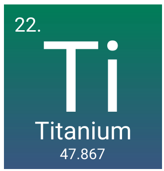

About
Titanium is a chemical element with the symbol Ti and atomic number 22. Its atomic weight is 47.867 measured in daltons. It is a lustrous transition metal with a silver color, low density, and high strength, resistant to corrosion in sea water, aqua regia, and chlorine. Wikipedia

Image

Symbol- Ti
Atomic mass- 47.867 u
Atomic number- 22
Discovered- 1791
Discovered by- William Gregor
Electrons per shell- 2, 8, 10, 2
Oxidation states- −2, −1, 0, +1, +2, +3, +4 (an amphoteric oxide)
Group- group 4
Appearance - silvery grey-white metallic
Van der Waals radius - NA